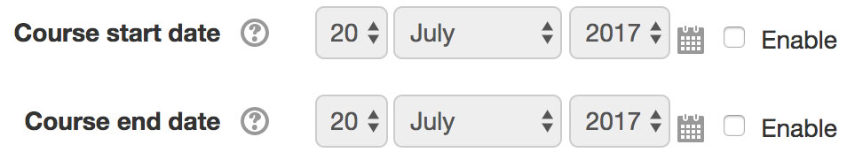
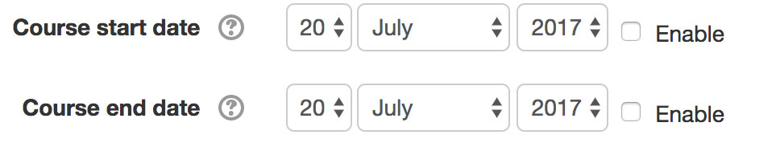

Moodle 3.2 introduced the concept of end dates for courses. Moodle 3.3 added a new Course Overview block which uses end dates to determinate whether a course is in progress, in the past, or in the future. This is pretty great, unless you’re in the following situation:
- Your school has five years worth of courses
- Those courses don’t have end dates
Congratulations—you now have five years of courses in progress. Your faculty will have five pages worth of past courses on the Course Overview block! That’s probably undesirable. To avoid it, I’m writing a plugin that lets an administrator set course start and end dates at the category level. While working on it, I ran an interesting edge case with Behat acceptance tests, reminding me that you’d best treat Behat like it's a real user.
Order of operations
Here’s a Behat snippet for manipulating a date picker in Moodle. It leads to a failure in Selenium but passes with Goutte.
1 | And I set the following fields to these values: |
Here’s the date picker with Javascript enabled:

Here’s the date picker with Javascript disabled:

When there’s Javascript on hand, you can actually disable the form element so that a user can’t manipulate it until the box is checked. When there’s no Javascript, Moodle falls back gracefully. You can manipulate the elements, but unless the box is checked no information will be submitted.
These fields are processed in order. The first three all fail, because the elements aren’t enabled yet. The last, setting id_enddate_enabled to 1, makes the form live. I’m surprised that those steps don’t fail; it seems like they should inasmuch as the field isn’t set.
Anyway, moving id_enddate_enabled to the start resolves the issue, and mimicks what a real user would actually do when using the form. As I wrote three years ago about a different test: “Write the test like Behat is an actual user.”
Bonus: if you have Moodle taking screenshots on failure, failures during cron will give you a screenshot of the cron log.